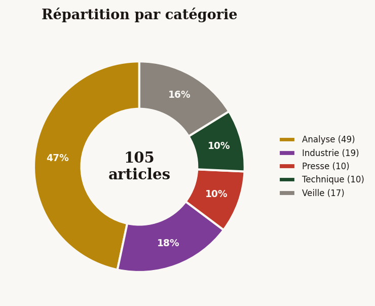
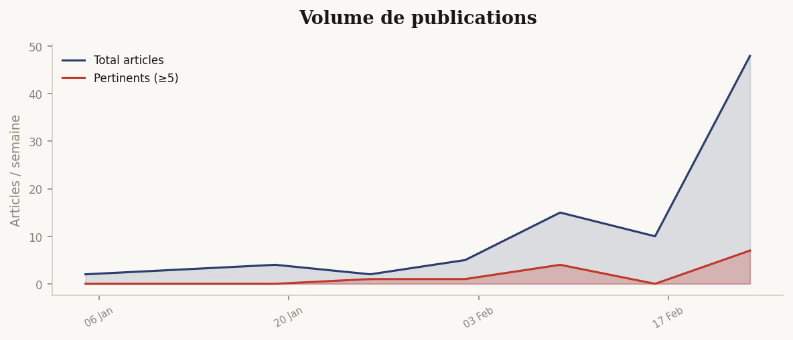

Synthèse éditoriale · Llama 3.1 8B
Memory Wall & Scalabilité des LLMs
Chargement de la synthèse…
Infographies
Graphiques générés par Python à partir des données collectées

Graphique non disponible

Graphique non disponible